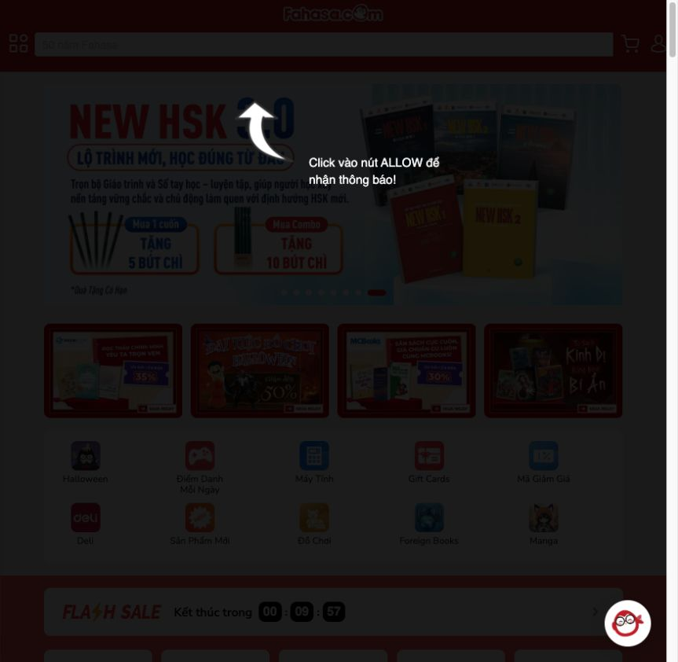
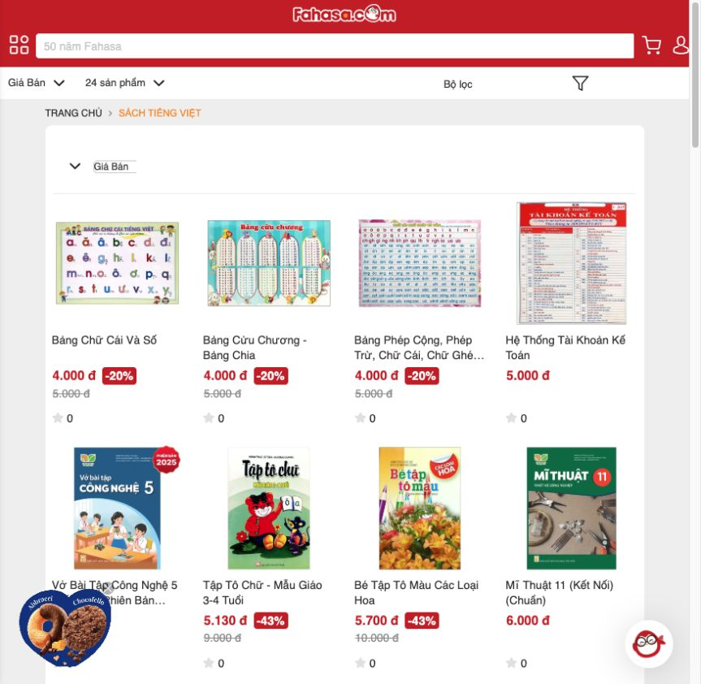
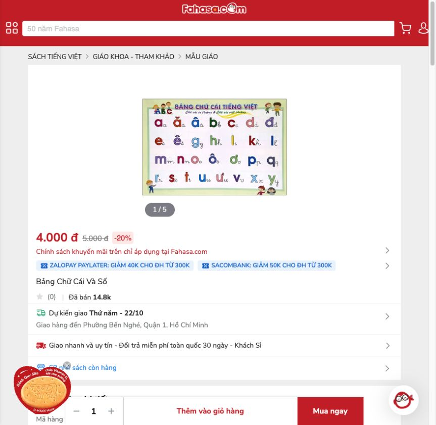
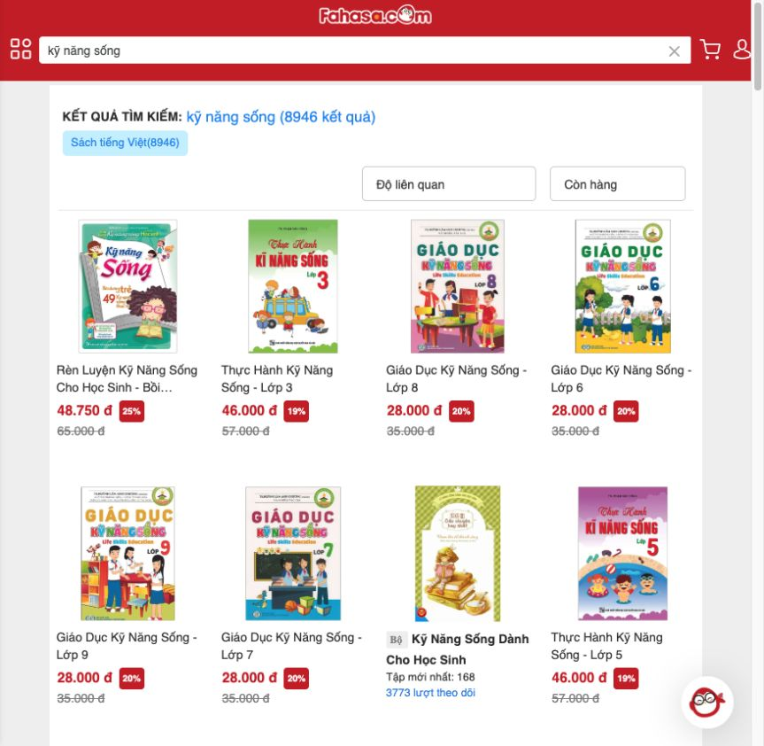
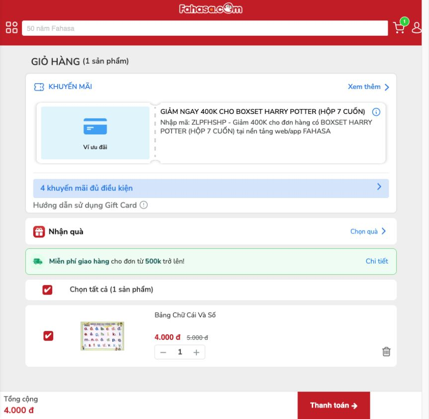

PHÁT TRIỂN ỨNG DỤNG WEB / TMĐT · CHƯƠNG 1
Khảo sát website Fahasa
và làm giao diện tủ sách Mộc
Bài thực hành Chương 1 · Ngày khảo sát: 20/10/2026
1. Website và phạm vi
Fahasa.com bán sách, văn phòng phẩm, đồ chơi và các nhóm hàng khác quan sát được trong menu. Nhóm khách hàng mục tiêu suy luận từ danh mục: người đọc sách, học sinh/sinh viên, phụ huynh và người mua dụng cụ học tập. Nhận xét này dựa trên các nhóm sản phẩm đang được giới thiệu trên website.
Bài khảo sát tập trung vào năm phần: trang chủ, danh mục, chi tiết sản phẩm, tìm kiếm và giỏ hàng. Website được xem khi chưa đăng nhập. Giá và kết quả tìm kiếm được ghi lại tại thời điểm khảo sát.
2. Bảng khảo sát năm khu vực
Bảng dưới đây ghi lại những gì đã xem trên website, nhận xét và đề xuất cho từng phần.
| Khu vực | Nội dung khảo sát | Điểm hợp lý | Điểm có thể cải thiện | Đề xuất và lý do |
|---|---|---|---|---|
| Trang chủXem trang ↗ | Có banner khuyến mại, lối vào nhóm hàng, Flash Sale và các khối sách nổi bật. Trong phiên khảo sát xuất hiện hộp khuyến mại che phần nội dung, phải đóng để tiếp tục. | Nhóm hàng và chương trình nổi bật giúp người mua khám phá nhanh. | Hộp khuyến mại tạo thêm một bước trước khi đọc nội dung chính. | Giảm số hộp khuyến mại khi vừa vào trang, để người xem dễ tìm nội dung chính hơn.Xem ảnh ↗ |
| Danh mục sản phẩmXem trang ↗ | Có danh sách dạng lưới, lựa chọn Giá Bán, 24 sản phẩm và Bộ lọc. Một số tên dài kết thúc bằng dấu ba chấm; trong ảnh chụp không thấy nút thao tác riêng trên thẻ. | Giá bán đậm, giá gốc gạch ngang và nhãn giảm giá dễ phân biệt. | Tên dài bị rút gọn khiến người mua cần mở sản phẩm để biết trọn tên. Phần lọc và sắp xếp mới được xem về cách bố trí, chưa thử hết các lựa chọn. | Đề xuất được triển khai: cho tên sách xuống dòng đầy đủ, dùng lưới thích ứng, có thao tác Xem chi tiết ngay trong từng thẻ.Xem ảnh ↗ |
| Chi tiết sản phẩmXem trang ↗ | Sản phẩm Bảng Chữ Cái Và Số có ảnh, giá bán 4.000đ, giá gốc 5.000đ, giảm 20%; có thông tin tác giả, NXB, số trang, mô tả, ô số lượng, Thêm vào giỏ hàng và Mua ngay. | Thông tin chi tiết và thao tác mua có trên cùng trang. | Có khá nhiều khối ưu đãi bên cạnh thông tin sách, nên phần nội dung chính chưa thật gọn. | Đặt tên và giá ở vị trí dễ nhìn, phần mô tả có thể mở thêm khi muốn đọc.Xem ảnh ↗ |
| Tìm kiếmXem trang ↗ | Đã nhập “kỹ năng sống” từ ô tìm kiếm và nhấn Enter; trang trả về tiêu đề 8.946 kết quả, có Độ liên quan và Còn hàng. Kết quả nhìn thấy gồm sách học sinh, trẻ em và một số mục series. | Hiển thị lại từ khóa và số lượng kết quả giúp xác nhận truy vấn. | Từ khóa rộng trả về sách cho nhiều nhóm tuổi, nên cần thêm bước để chọn đúng loại sách muốn tìm. | Có thể thêm gợi ý theo độ tuổi hoặc nhu cầu đọc để tìm nhanh hơn.Xem ảnh ↗ |
| Giỏ hàngXem trang ↗ | Đã xem giỏ rỗng và giỏ có 1 Bảng Chữ Cái Và Số. Giỏ hiển thị giá 4.000đ/5.000đ, ô số lượng 1, checkbox chọn sản phẩm và nút xóa. Khi chưa chọn sản phẩm, tổng 0đ; sau khi chọn, tổng 4.000đ. | Có thể lựa chọn sản phẩm để tính tổng; trạng thái rỗng có lối Mua sắm ngay. | Giỏ đã có sách nhưng tổng vẫn là 0đ nếu chưa đánh dấu chọn, nên người mới có thể hơi khó hiểu. | Thêm dòng “Chọn sản phẩm để tính tổng”. Bài khảo sát chỉ thử thêm và chọn sản phẩm, chưa thử thanh toán.Xem ảnh ↗ |


3. Vấn đề và phương án được chọn
Vấn đề cụ thể: Trong ảnh danh mục, một số tên dài bị rút gọn; từng thẻ chưa có nút thao tác riêng hiển thị. Giá bán, giá gốc và nhãn giảm giá đã khá rõ nên được giữ lại về nguyên tắc tổ chức thông tin.
Mục tiêu: Người xem đọc trọn tên, so sánh giá và mở thông tin sách ngay trên thẻ. Phạm vi một trang tủ sách mẫu, tối thiểu bốn sản phẩm. Bài chỉ làm phần giao diện bằng HTML/CSS.
- Bố cục: đầu trang gọn → giới thiệu → lưới 4 sách → gợi ý chọn sách → thông tin dự án.
- Thẻ: bìa tự tạo, tác giả, tên đầy đủ, giá bán, giá gốc nếu giảm, mức tiết kiệm và nút mở chi tiết.
- Responsive: 4 cột khi trên 700px; 2 cột khi 351–700px; 1 cột khi từ 350px trở xuống. Không dùng cắt dòng tên sách.
- HTML chia thành các phần: đầu trang, giới thiệu, danh sách sách và cuối trang.
- CSS dùng Grid để chia cột và media query để đổi bố cục theo màn hình. Nút chi tiết có thể dùng cả chuột lẫn bàn phím.
4. Dữ liệu và quyền sử dụng
Bốn cuốn sách, tên tác giả và giá trong Mộc là dữ liệu mẫu. Bìa sách được tự thiết kế, không lấy ảnh sản phẩm của Fahasa. Các ảnh chụp Fahasa được giữ lại để minh họa cho phần khảo sát.
5. Chạy thử và chỉnh sửa
Sau khi chạy thử, phần ảnh bìa đầu trang được sửa lại để không bị tràn trên màn hình nhỏ. Nút chi tiết cũng được đổi thành “Thu gọn” khi đang mở để dễ hiểu hơn. Xem ảnh trước/sau và giải thích phần mã đã sửa.
Trang hiển thị bốn sách mẫu và có thể mở phần giới thiệu từng cuốn. Bài chưa làm giỏ hàng, tìm kiếm hoặc thanh toán.
6. Ảnh khảo sát





7. Kết quả
Qua bài tập, có thể thấy một thẻ sản phẩm cần thể hiện rõ tên, giá và cách xem thêm thông tin. Bản Mộc giữ cách phân biệt giá bán và giá gốc của website tham khảo, đồng thời cho hiện đủ tên sách và thêm nút chi tiết. Bố cục được thử ở cả khung máy tính và khung điện thoại trên trình duyệt.
8. Tài liệu tham khảo
- Đề thực hành Chương 1 – Phát triển ứng dụng Web/TMĐT.
- Website Fahasa và các ảnh chụp ở phần khảo sát.
- GitHub Docs — cấu hình GitHub Pages.
Mộc · Bài thực hành HTML/CSS · Có sử dụng AI hỗ trợ, xem nhật ký trong repository.